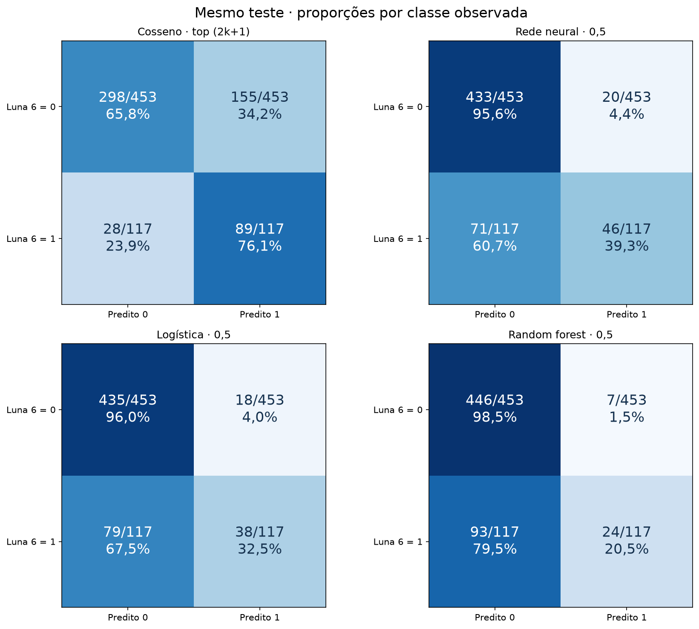
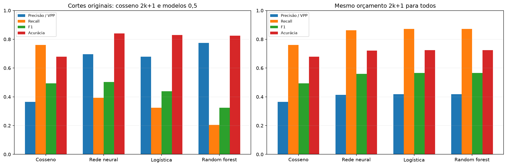
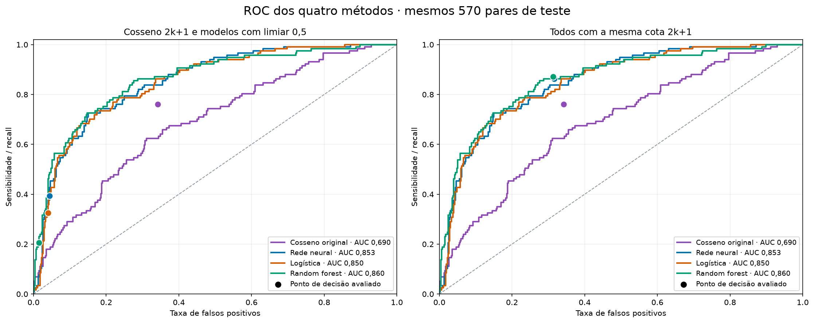

570 pares de teste · 57 tópicos por pergunta · 117 relacionados e 453 não relacionados segundo Luna 6.
Para cada pergunta, k é o número de pares Luna 6 = 1 no teste. Ordenam-se somente os 57 candidatos dessa pergunta pela similaridade cosseno original, calculada como 1 − distância cosseno. Retornam-se os primeiros min(2k+1, 57). Empates são resolvidos pelo ID do par, sem consultar o rótulo do candidato empatado.
"Útil" nesta comparação mantém o significado do alvo: relação temática segundo Luna 6.
A cota depende do k observado nos rótulos de teste. Trata-se de uma avaliação diagnóstica com prevalência conhecida, não de uma regra pronta para perguntas sem rótulos. Nenhum modelo foi reajustado.
| Pergunta | N teste | k úteis Luna | 2k+1 | Retornados | Cota limitada |
|---|---|---|---|---|---|
| nova_01 | 57 | 24 | 49 | 49 | Não |
| nova_02 | 57 | 7 | 15 | 15 | Não |
| nova_03 | 57 | 9 | 19 | 19 | Não |
| nova_04 | 57 | 14 | 29 | 29 | Não |
| nova_05 | 57 | 8 | 17 | 17 | Não |
| nova_06 | 57 | 4 | 9 | 9 | Não |
| nova_07 | 57 | 7 | 15 | 15 | Não |
| nova_08 | 57 | 28 | 57 | 57 | Não |
| nova_09 | 57 | 10 | 21 | 21 | Não |
| nova_10 | 57 | 6 | 13 | 13 | Não |
Os modelos conservam as decisões com probabilidade ≥ 0,5. O cosseno segue a cota 2k+1 por pergunta. As quantidades retornadas são diferentes.
| Método | Retornados | Úteis (TP) | Não úteis (FP) | Úteis perdidos (FN) | Precisão / VPP | Recall | F1 | Acurácia | Acurácia balanceada | VPN | Especificidade |
|---|---|---|---|---|---|---|---|---|---|---|---|
| Cosseno · top (2k+1) | 244 | 89 | 155 | 28 | 36,5% | 76,1% | 49,3% | 67,9% | 70,9% | 91,4% | 65,8% |
| Rede neural · 0,5 | 66 | 46 | 20 | 71 | 69,7% | 39,3% | 50,3% | 84,0% | 67,5% | 85,9% | 95,6% |
| Logística · 0,5 | 56 | 38 | 18 | 79 | 67,9% | 32,5% | 43,9% | 83,0% | 64,3% | 84,6% | 96,0% |
| Random forest · 0,5 | 31 | 24 | 7 | 93 | 77,4% | 20,5% | 32,4% | 82,5% | 59,5% | 82,7% | 98,5% |

Linhas: observado Luna 6; colunas: predito. Cada célula mostra contagem/total da linha e percentual; cada linha soma 100%. VPP e VPN usam os totais preditos como denominadores.
Como análise complementar, cada modelo também ordena seus candidatos pela probabilidade salva e retorna exatamente a mesma cota 2k+1 do cosseno, em cada pergunta. Isso compara rankings sob o mesmo orçamento. Os escores e modelos continuam congelados.
| Método | Retornados | Úteis (TP) | Não úteis (FP) | Úteis perdidos (FN) | Precisão / VPP | Recall | F1 | Acurácia | Acurácia balanceada | VPN | Especificidade |
|---|---|---|---|---|---|---|---|---|---|---|---|
| Cosseno · top (2k+1) | 244 | 89 | 155 | 28 | 36,5% | 76,1% | 49,3% | 67,9% | 70,9% | 91,4% | 65,8% |
| Rede neural · top (2k+1) | 244 | 101 | 143 | 16 | 41,4% | 86,3% | 56,0% | 72,1% | 77,4% | 95,1% | 68,4% |
| Logística · top (2k+1) | 244 | 102 | 142 | 15 | 41,8% | 87,2% | 56,5% | 72,5% | 77,9% | 95,4% | 68,7% |
| Random forest · top (2k+1) | 244 | 102 | 142 | 15 | 41,8% | 87,2% | 56,5% | 72,5% | 77,9% | 95,4% | 68,7% |

| Método | AUC ROC | AP |
|---|---|---|
| Cosseno original | 0,6897 | 0,3969 |
| Rede neural | 0,8528 | 0,5736 |
| Logística | 0,8496 | 0,5676 |
| Random forest | 0,8598 | 0,6439 |

As curvas usam os escores contínuos originais, sem converter as previsões em classes. As curvas e suas AUCs são iguais nos dois painéis; mudam os pontos de decisão. Os pontos dos cortes por pergunta podem ficar fora da ROC de um limiar global único, pois usam cotas específicas por pergunta. Os pontos dos modelos com limiar 0,5 pertencem à respectiva ROC.
| Método | Retornados | TP | FP | FN | VPP | Recall | F1 | Acurácia | Acurácia balanceada | VPN |
|---|---|---|---|---|---|---|---|---|---|---|
| Rede neural · 0,5 | 22 | 14 | 8 | 10 | 63,6% | 58,3% | 60,9% | 68,4% | 67,0% | 71,4% |
| Logística · 0,5 | 16 | 10 | 6 | 14 | 62,5% | 41,7% | 50,0% | 64,9% | 61,7% | 65,9% |
| Random forest · 0,5 | 10 | 8 | 2 | 16 | 80,0% | 33,3% | 47,1% | 68,4% | 63,6% | 66,0% |
| Cosseno · top (2k+1) | 49 | 23 | 26 | 1 | 46,9% | 95,8% | 63,0% | 52,6% | 58,5% | 87,5% |
| Rede neural · top (2k+1) | 49 | 24 | 25 | 0 | 49,0% | 100,0% | 65,8% | 56,1% | 62,1% | 100,0% |
| Logística · top (2k+1) | 49 | 24 | 25 | 0 | 49,0% | 100,0% | 65,8% | 56,1% | 62,1% | 100,0% |
| Random forest · top (2k+1) | 49 | 23 | 26 | 1 | 46,9% | 95,8% | 63,0% | 52,6% | 58,5% | 87,5% |
| Método | Retornados | TP | FP | FN | VPP | Recall | F1 | Acurácia | Acurácia balanceada | VPN |
|---|---|---|---|---|---|---|---|---|---|---|
| Rede neural · 0,5 | 1 | 1 | 0 | 6 | 100,0% | 14,3% | 25,0% | 89,5% | 57,1% | 89,3% |
| Logística · 0,5 | 1 | 1 | 0 | 6 | 100,0% | 14,3% | 25,0% | 89,5% | 57,1% | 89,3% |
| Random forest · 0,5 | 0 | 0 | 0 | 7 | — | 0,0% | 0,0% | 87,7% | 50,0% | 87,7% |
| Cosseno · top (2k+1) | 15 | 2 | 13 | 5 | 13,3% | 28,6% | 18,2% | 68,4% | 51,3% | 88,1% |
| Rede neural · top (2k+1) | 15 | 5 | 10 | 2 | 33,3% | 71,4% | 45,5% | 78,9% | 75,7% | 95,2% |
| Logística · top (2k+1) | 15 | 5 | 10 | 2 | 33,3% | 71,4% | 45,5% | 78,9% | 75,7% | 95,2% |
| Random forest · top (2k+1) | 15 | 6 | 9 | 1 | 40,0% | 85,7% | 54,5% | 82,5% | 83,9% | 97,6% |
| Método | Retornados | TP | FP | FN | VPP | Recall | F1 | Acurácia | Acurácia balanceada | VPN |
|---|---|---|---|---|---|---|---|---|---|---|
| Rede neural · 0,5 | 2 | 2 | 0 | 7 | 100,0% | 22,2% | 36,4% | 87,7% | 61,1% | 87,3% |
| Logística · 0,5 | 2 | 2 | 0 | 7 | 100,0% | 22,2% | 36,4% | 87,7% | 61,1% | 87,3% |
| Random forest · 0,5 | 0 | 0 | 0 | 9 | — | 0,0% | 0,0% | 84,2% | 50,0% | 84,2% |
| Cosseno · top (2k+1) | 19 | 5 | 14 | 4 | 26,3% | 55,6% | 35,7% | 68,4% | 63,2% | 89,5% |
| Rede neural · top (2k+1) | 19 | 7 | 12 | 2 | 36,8% | 77,8% | 50,0% | 75,4% | 76,4% | 94,7% |
| Logística · top (2k+1) | 19 | 7 | 12 | 2 | 36,8% | 77,8% | 50,0% | 75,4% | 76,4% | 94,7% |
| Random forest · top (2k+1) | 19 | 7 | 12 | 2 | 36,8% | 77,8% | 50,0% | 75,4% | 76,4% | 94,7% |
| Método | Retornados | TP | FP | FN | VPP | Recall | F1 | Acurácia | Acurácia balanceada | VPN |
|---|---|---|---|---|---|---|---|---|---|---|
| Rede neural · 0,5 | 1 | 1 | 0 | 13 | 100,0% | 7,1% | 13,3% | 77,2% | 53,6% | 76,8% |
| Logística · 0,5 | 1 | 1 | 0 | 13 | 100,0% | 7,1% | 13,3% | 77,2% | 53,6% | 76,8% |
| Random forest · 0,5 | 0 | 0 | 0 | 14 | — | 0,0% | 0,0% | 75,4% | 50,0% | 75,4% |
| Cosseno · top (2k+1) | 29 | 10 | 19 | 4 | 34,5% | 71,4% | 46,5% | 59,6% | 63,6% | 85,7% |
| Rede neural · top (2k+1) | 29 | 10 | 19 | 4 | 34,5% | 71,4% | 46,5% | 59,6% | 63,6% | 85,7% |
| Logística · top (2k+1) | 29 | 10 | 19 | 4 | 34,5% | 71,4% | 46,5% | 59,6% | 63,6% | 85,7% |
| Random forest · top (2k+1) | 29 | 11 | 18 | 3 | 37,9% | 78,6% | 51,2% | 63,2% | 68,4% | 89,3% |
| Método | Retornados | TP | FP | FN | VPP | Recall | F1 | Acurácia | Acurácia balanceada | VPN |
|---|---|---|---|---|---|---|---|---|---|---|
| Rede neural · 0,5 | 2 | 1 | 1 | 7 | 50,0% | 12,5% | 20,0% | 86,0% | 55,2% | 87,3% |
| Logística · 0,5 | 2 | 0 | 2 | 8 | 0,0% | 0,0% | 0,0% | 82,5% | 48,0% | 85,5% |
| Random forest · 0,5 | 0 | 0 | 0 | 8 | — | 0,0% | 0,0% | 86,0% | 50,0% | 86,0% |
| Cosseno · top (2k+1) | 17 | 4 | 13 | 4 | 23,5% | 50,0% | 32,0% | 70,2% | 61,7% | 90,0% |
| Rede neural · top (2k+1) | 17 | 6 | 11 | 2 | 35,3% | 75,0% | 48,0% | 77,2% | 76,3% | 95,0% |
| Logística · top (2k+1) | 17 | 6 | 11 | 2 | 35,3% | 75,0% | 48,0% | 77,2% | 76,3% | 95,0% |
| Random forest · top (2k+1) | 17 | 6 | 11 | 2 | 35,3% | 75,0% | 48,0% | 77,2% | 76,3% | 95,0% |
| Método | Retornados | TP | FP | FN | VPP | Recall | F1 | Acurácia | Acurácia balanceada | VPN |
|---|---|---|---|---|---|---|---|---|---|---|
| Rede neural · 0,5 | 4 | 2 | 2 | 2 | 50,0% | 50,0% | 50,0% | 93,0% | 73,1% | 96,2% |
| Logística · 0,5 | 5 | 3 | 2 | 1 | 60,0% | 75,0% | 66,7% | 94,7% | 85,6% | 98,1% |
| Random forest · 0,5 | 0 | 0 | 0 | 4 | — | 0,0% | 0,0% | 93,0% | 50,0% | 93,0% |
| Cosseno · top (2k+1) | 9 | 3 | 6 | 1 | 33,3% | 75,0% | 46,2% | 87,7% | 81,8% | 97,9% |
| Rede neural · top (2k+1) | 9 | 3 | 6 | 1 | 33,3% | 75,0% | 46,2% | 87,7% | 81,8% | 97,9% |
| Logística · top (2k+1) | 9 | 3 | 6 | 1 | 33,3% | 75,0% | 46,2% | 87,7% | 81,8% | 97,9% |
| Random forest · top (2k+1) | 9 | 3 | 6 | 1 | 33,3% | 75,0% | 46,2% | 87,7% | 81,8% | 97,9% |
| Método | Retornados | TP | FP | FN | VPP | Recall | F1 | Acurácia | Acurácia balanceada | VPN |
|---|---|---|---|---|---|---|---|---|---|---|
| Rede neural · 0,5 | 1 | 1 | 0 | 6 | 100,0% | 14,3% | 25,0% | 89,5% | 57,1% | 89,3% |
| Logística · 0,5 | 0 | 0 | 0 | 7 | — | 0,0% | 0,0% | 87,7% | 50,0% | 87,7% |
| Random forest · 0,5 | 0 | 0 | 0 | 7 | — | 0,0% | 0,0% | 87,7% | 50,0% | 87,7% |
| Cosseno · top (2k+1) | 15 | 3 | 12 | 4 | 20,0% | 42,9% | 27,3% | 71,9% | 59,4% | 90,5% |
| Rede neural · top (2k+1) | 15 | 4 | 11 | 3 | 26,7% | 57,1% | 36,4% | 75,4% | 67,6% | 92,9% |
| Logística · top (2k+1) | 15 | 5 | 10 | 2 | 33,3% | 71,4% | 45,5% | 78,9% | 75,7% | 95,2% |
| Random forest · top (2k+1) | 15 | 4 | 11 | 3 | 26,7% | 57,1% | 36,4% | 75,4% | 67,6% | 92,9% |
| Método | Retornados | TP | FP | FN | VPP | Recall | F1 | Acurácia | Acurácia balanceada | VPN |
|---|---|---|---|---|---|---|---|---|---|---|
| Rede neural · 0,5 | 30 | 22 | 8 | 6 | 73,3% | 78,6% | 75,9% | 75,4% | 75,5% | 77,8% |
| Logística · 0,5 | 26 | 19 | 7 | 9 | 73,1% | 67,9% | 70,4% | 71,9% | 71,9% | 71,0% |
| Random forest · 0,5 | 21 | 16 | 5 | 12 | 76,2% | 57,1% | 65,3% | 70,2% | 70,0% | 66,7% |
| Cosseno · top (2k+1) | 57 | 28 | 29 | 0 | 49,1% | 100,0% | 65,9% | 49,1% | 50,0% | — |
| Rede neural · top (2k+1) | 57 | 28 | 29 | 0 | 49,1% | 100,0% | 65,9% | 49,1% | 50,0% | — |
| Logística · top (2k+1) | 57 | 28 | 29 | 0 | 49,1% | 100,0% | 65,9% | 49,1% | 50,0% | — |
| Random forest · top (2k+1) | 57 | 28 | 29 | 0 | 49,1% | 100,0% | 65,9% | 49,1% | 50,0% | — |
| Método | Retornados | TP | FP | FN | VPP | Recall | F1 | Acurácia | Acurácia balanceada | VPN |
|---|---|---|---|---|---|---|---|---|---|---|
| Rede neural · 0,5 | 1 | 0 | 1 | 10 | 0,0% | 0,0% | 0,0% | 80,7% | 48,9% | 82,1% |
| Logística · 0,5 | 1 | 0 | 1 | 10 | 0,0% | 0,0% | 0,0% | 80,7% | 48,9% | 82,1% |
| Random forest · 0,5 | 0 | 0 | 0 | 10 | — | 0,0% | 0,0% | 82,5% | 50,0% | 82,5% |
| Cosseno · top (2k+1) | 21 | 6 | 15 | 4 | 28,6% | 60,0% | 38,7% | 66,7% | 64,0% | 88,9% |
| Rede neural · top (2k+1) | 21 | 8 | 13 | 2 | 38,1% | 80,0% | 51,6% | 73,7% | 76,2% | 94,4% |
| Logística · top (2k+1) | 21 | 8 | 13 | 2 | 38,1% | 80,0% | 51,6% | 73,7% | 76,2% | 94,4% |
| Random forest · top (2k+1) | 21 | 9 | 12 | 1 | 42,9% | 90,0% | 58,1% | 77,2% | 82,2% | 97,2% |
| Método | Retornados | TP | FP | FN | VPP | Recall | F1 | Acurácia | Acurácia balanceada | VPN |
|---|---|---|---|---|---|---|---|---|---|---|
| Rede neural · 0,5 | 2 | 2 | 0 | 4 | 100,0% | 33,3% | 50,0% | 93,0% | 66,7% | 92,7% |
| Logística · 0,5 | 2 | 2 | 0 | 4 | 100,0% | 33,3% | 50,0% | 93,0% | 66,7% | 92,7% |
| Random forest · 0,5 | 0 | 0 | 0 | 6 | — | 0,0% | 0,0% | 89,5% | 50,0% | 89,5% |
| Cosseno · top (2k+1) | 13 | 5 | 8 | 1 | 38,5% | 83,3% | 52,6% | 84,2% | 83,8% | 97,7% |
| Rede neural · top (2k+1) | 13 | 6 | 7 | 0 | 46,2% | 100,0% | 63,2% | 87,7% | 93,1% | 100,0% |
| Logística · top (2k+1) | 13 | 6 | 7 | 0 | 46,2% | 100,0% | 63,2% | 87,7% | 93,1% | 100,0% |
| Random forest · top (2k+1) | 13 | 5 | 8 | 1 | 38,5% | 83,3% | 52,6% | 84,2% | 83,8% | 97,7% |
A seleção usa a similaridade original, sem min–max e sem tratar cosseno como probabilidade. Não se calcula log loss ou Brier para esse escore sem calibração. AUC e AP, registradas no CSV, usam os escores contínuos; os cortes por pergunta podem não corresponder a um único limiar global desses escores.
As mesmas dez perguntas estão no treino e teste; os tópicos do teste não aparecem no treino. Não há avaliação de perguntas inéditas nem novos julgamentos de API.